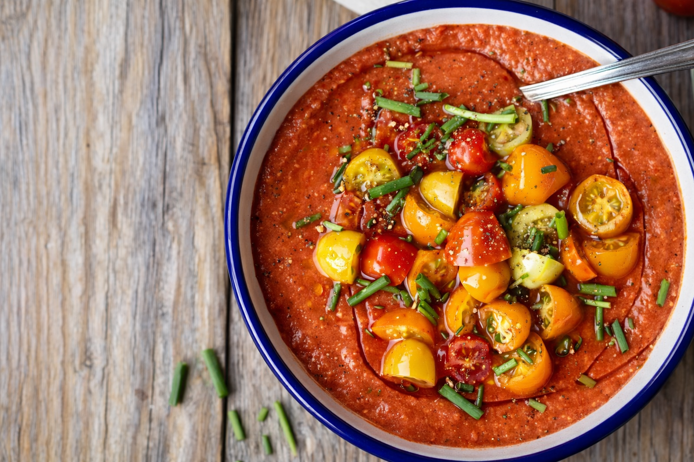
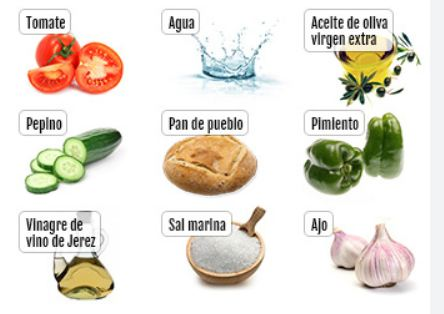
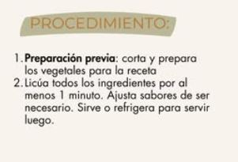
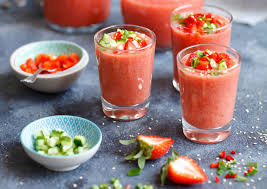

Gazpacho andaluz
El gazpacho andaluz es una receta tradicional muy apreciada por su frescura, su sencillez y el protagonismo de productos vegetales propios de la cocina mediterránea.

Una receta vinculada al verano
El gazpacho es una preparación fría que forma parte del recetario tradicional andaluz y que se consume especialmente durante los meses de calor. Su textura ligera y su sabor refrescante han contribuido a convertirlo en una de las recetas más populares de la cocina española.
Sus ingredientes principales suelen ser tomate, pepino, pimiento, ajo, aceite de oliva, agua y pan, aunque pueden encontrarse distintas variantes según la zona o las preferencias de cada casa. La calidad del producto fresco influye mucho en el resultado final, algo muy característico de la gastronomía mediterránea.
Más allá de ser una receta sencilla, el gazpacho representa una forma de aprovechar ingredientes cotidianos para obtener un plato nutritivo y adecuado para climas cálidos. Por eso sigue siendo una elaboración presente tanto en el ámbito doméstico como en la restauración.
Galería de imágenes


